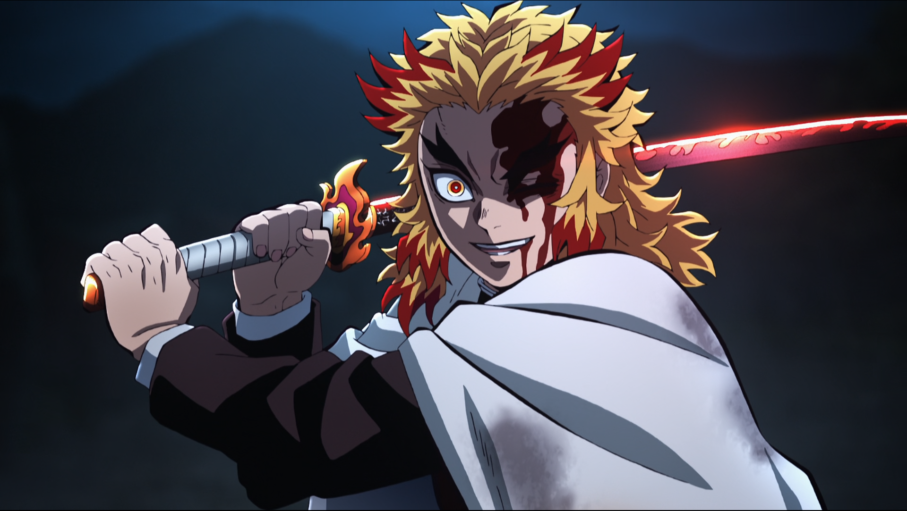

About Demon slayer
Tanjiro Kamado is a kind-hearted and intelligent boy who lives with his family
in the mountains. After his father's death, he became his family's breadwinner and travels to the
nearby village to sell charcoal. One day, Tanjiro comes home to discover his family was slaughtered
by a demon. His sister Nezuko is the sole survivor of the incident; though she has been transformed
into a demon, Nezuko still shows signs of human emotion and thought. Following an encounter with
Giyu Tomioka, the Water Hashira of the Demon Slayer Corps, Tanjiro is sent to train with Giyu's
former instructor Sakonji Urokodaki in becoming a Demon Slayer and begins his quest to help Nezuko
turn into a human again.
Two years later, Tanjiro learns the "Water Breathing" style and takes part in a formidable exam. He
is one of the few to pass, officially making him a member of the Corps. Sakonji has hypnotized
Nezuko to not harm humans and she aids Tanjiro in dire situations as he starts his work of hunting
down and slaying demons. One of their assignments bring them to Asakusa where they encounter Muzan
Kibutsuji, the progenitor of all demons and the one responsible for the murder of their family.
Tanjiro and Nezuko also meet Tamayo and Yushiro, two demons free from Muzan's control. They ally to
develop a cure for Nezuko, though it will require Tanjiro to supply Tamayo with blood samples from
the Twelve Kizuki, the twelve most powerful demons under Muzan's command, split into the six Lower
Ranks and the six Upper Ranks.
Along their journey, Tanjiro and Nezuko meet fellow Demon Slayers Zenitsu Agatsuma and Inosuke
Hashibira; they team up after Tanjiro's mission to kill Kyogai, the former Lower Six. They later
join other Demon Slayers in facing the family of Lower Five Rui. In the midst of battle, Tanjiro
unlocks a mysterious Breathing Style known as "Hinokami Kagura", but Rui ultimately outmatches him,
while Inosuke and Zenitsu are injured and the expedition is slaughtered. Giyu and Insect Hashira
Shinobu Kocho rescue the survivors, who are brought back to the Corps' headquarters. Tanjiro is put
on trial by the Hashira – Giyu, Shinobu, Flame Hashira Kyojuro Rengoku, Sound Hashira Tengen Uzui,
Love Hashira Mitsuri Kanroji, Stone Hashira Gyomei Himejima, Mist Hashira Muichiro Tokito, Serpent
Hashira Obanai Iguro, and Wind Hashira Sanemi Shinazugawa – who, with the exception of Giyu and
Mitsuri, do not believe he and Nezuko should be allowed to live. Nonetheless, the Corps' leader
Kagaya Ubuyashiki, is able to convince them to accept Nezuko and see Tanjiro's importance, believing
it is with their help that Muzan can be defeated.
Angered by Rui's death, Muzan kills the Lower Ranks due to their constant failures; he spares Lower
One Enmu and tasks him with killing Tanjiro. After a battle against Enmu in a passenger train,
Tanjiro kills him with Kyojuro's support. However, Upper Three Akaza appears and battles Kyojuro,
who dies from his wounds as the demon escapes. Months later, the group is sent to Yoshiwara with
Tengen, where they face off and kill the Upper Six siblings Gyutaro and Daki. Tengen retires from
the Corps after suffering extensive injuries. During another battle at the Swordsmith Village, where
the Corps' weapons are forged, Tanjiro meets Sanemi's younger brother Genya, who has the mysterious
ability to temporarily gain demonic powers after eating their flesh. With the help of Muichiro and
Mitsuri, the group kill Upper Five Gyokko and Upper Four Hantengu. In the aftermath, they discover
that Nezuko is immune to sunlight. She becomes Muzan's prime target as he has long sought a way to
overcome the sun and become immortal. Tanjiro also learns his Hinokami Kagura descends from "Sun
Breathing", the first Breathing Style created by Yoriichi Tsugikuni, the most powerful Demon Slayer
in history, and develops it to fight Muzan.
Knowing Muzan will attempt to find Nezuko, the Corps enacts strict training to prepare its members
for the coming conflict. Tamayo develops a serum with the obtained blood samples to cure Nezuko, who
is kept in isolation as she recovers. Muzan appears and Kagaya triggers a suicide attack to stagger
him. The Hashira ambush Muzan but he traps them all within the Infinity Castle, an endless labyrinth
housing Akaza, Upper Two Doma, Upper One Kokushibo, and the newly-ascended members Kaigaku and
Nakime: Zenitsu's former partner and Muzan's personal assistant respectively. As Zenitsu kills
Kaigaku, Tamayo injects Muzan with a poison she and Shinobu have made to weaken his abilities. When
Akaza remembers his human life, he betrays Muzan and commits suicide, while Shinobu sacrifices
herself to poison Doma, allowing her protégé Kanao Tsuyuri and Inosuke to kill him. After a
harrowing battle, Kokushibo kills both Muichiro and Genya before being killed as well. Muzan kills
Tamayo, and later Nakime when she is hypnotized by Yushiro to use her powers against him, but he is
forced above ground by the Corps.
Aided by Tamayo's poison, the Corps unleash a desperate battle of attrition as the remaining members
fight to stall Muzan until the morning sun can kill him. Muzan is left helpless against the sun but
Gyomei, Obanai, and Mitsuri succumb to their injuries. As Tanjiro delivers the final blow, Muzan
fatally wounds him and forcefully gives him his remaining blood. Tanjiro is transformed into a demon
as Muzan's last-ditch effort to have his species survive. He begins to attack the survivors but
through their efforts and Nezuko's aid, who has been fully restored to her human self, the
transformation is reversed. In the aftermath of the battle, the Corps are disbanded, leaving Giyu
and Sanemi as the last surviving Hashira.
Muzan's death has effectively vanquished all demons under his control while Yushiro goes to live as
a painter. Tanjiro and Nezuko return to their home, accompanied by Zenitsu and Inosuke. Tanjiro and
Inosuke marry Kanao and fellow Demon Slayer Aoi Kanzaki, respectively, while Zenitsu marries Nezuko.
In a modern-day epilogue, the descendants and reincarnations of the Corps members enjoy a peaceful
life free of demons.
Kyojuro Rengoku
Voiced by: Satoshi Hino,Mariya Ise (child) (Japanese); Mark Whitten, Ryan Bartley (child) (English)
The Flame Hashira and successor to his father Shinjuro. Though he comes off as boisterous and eccentric,
he is pure-hearted and honorable, as his mother instilled in him a moral code of protecting the weak. He
is assigned to investigate the Mugen Train, with Tanjiro, Zenitsu, Inosuke, and Nezuko aiding him in
dispatching Enmu. After the battle, Akaza confronts him and proposes that he turn into a demon, having
recognized his skill and strength. Kyojuro rejects this and battles him, but is ultimately killed. In
his last moments, he directs Tanjiro to Shinjuro. Tanjiro later has the tsuba of Kyojuro's sword
installed into his new sword to honor him. In the Reiwa Era, he is reincarnated as a high school student
named Tojuro.

Episodes & Seasons
Season 1
Season 1 introduces Tanjiro’s journey, his fight to become a Demon Slayer, and his search for a cure for
Nezuko.
Mugen Train Arc
The Mugen Train arc continues Tanjiro’s story as he joins the Flame Hashira, Kyoujurou Rengoku, to take
down demons aboard a train.
Entertainment District Arc
In this arc, Tanjiro and his friends team up with the Sound Hashira, Tengen Uzui, to battle demons in a
vibrant entertainment district.